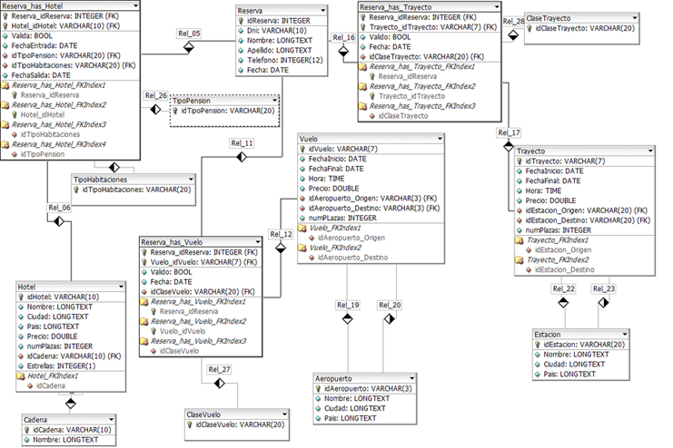
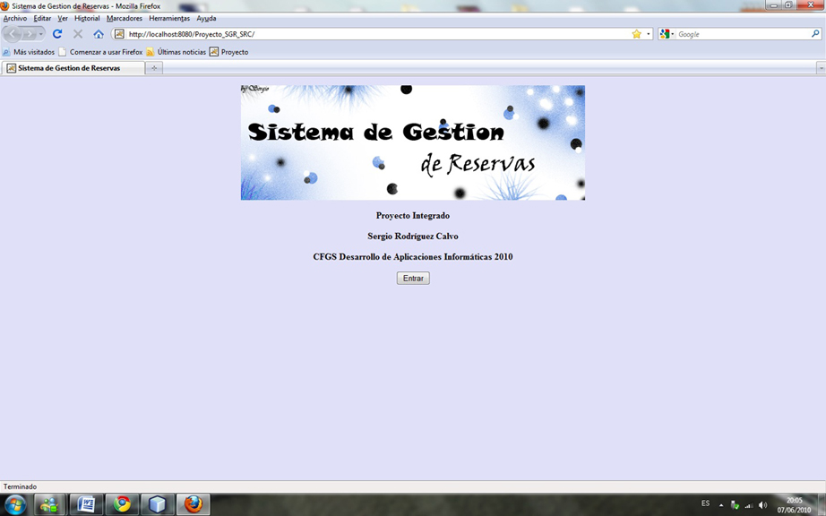
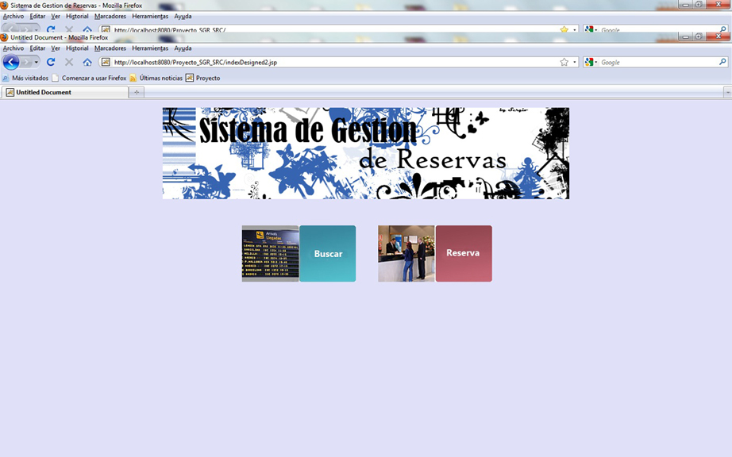
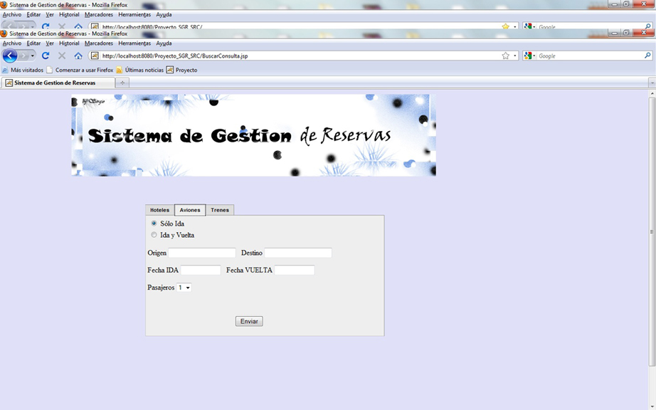
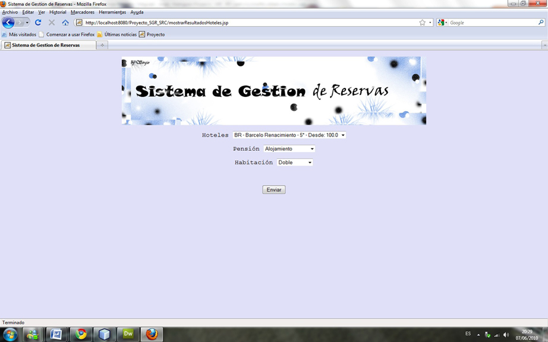

Proyecto Integrado
Descripción
El proyecto integrado se corresponde con un modulo del Grado Superior de Desarrollo de Aplicaciones Informaticas, correspondiente al tercer trimestre del segundo curso, coincidiendo con las practicas de empresas.
Para este proyecto decidi realizar un sistema de reservas de vuelos, hoteles y trenes con interfaz web utilizando para ello JSP, y un poco de JavaScript. La aplicacion por tanto se estructura en capas: capa de datos, capa modelo, capa de acceso a datos y capa vista.
La capa de datos se corresponde con los datos en la base de datos. Para ello, se utilizo una base de datos MySQL donde se encontraba el esquema de datos y los propios datos.
La capa modelo es donde se contienen las clases en Java correspondientes al domio del problema, como por ejemplo la entidad Vuelo, ReservaVuelo, etc.
La capa de acceso a dato contiene las clases correspondientes a la gestion de la base de datos, es decir, inserccion, actualizacion, borrado y consulta.
Respecto a la capa vista al realizarse en JSP consiste en realizar la estructura de la pagina en HTML e ir metiendo codigo Java en el mismo archivo para que el servidor Apache Tomcat se encarge que pintar la pagina con los datos correspondientes. Tambien se utilizo de manera muy simple algo de CSS y un poco de JavaScript, por ejemplo para poner un calendario como metodo de introduccion de fecha.
   